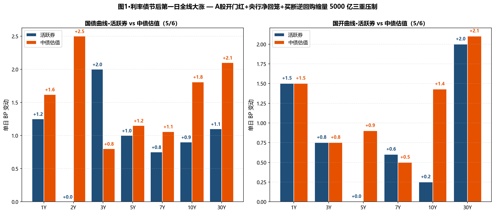
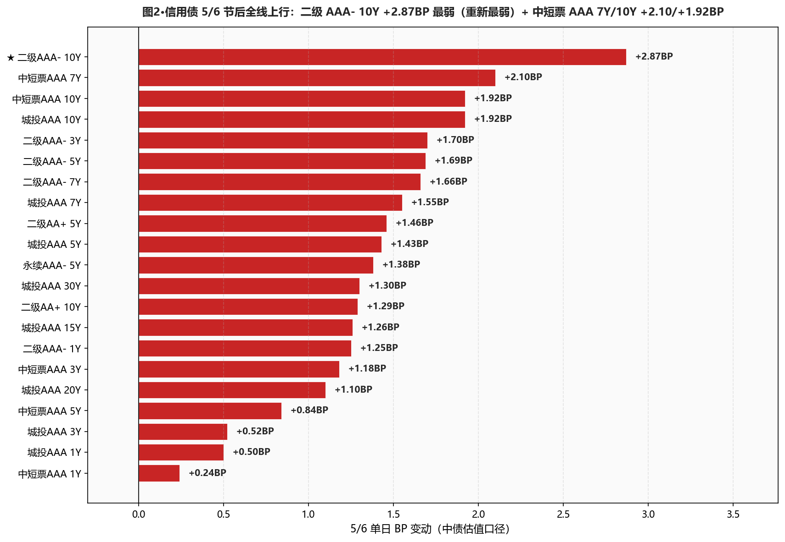
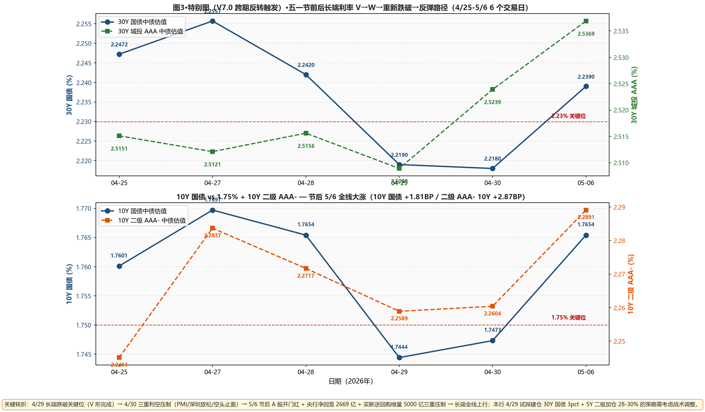

市场定性 节后全线大涨 + 央行流动性回归常态 + A 股开门红—— 国债中债估值全线上行：1Y +1.62 / 2Y +2.50 / 3Y +0.80 / 5Y +1.15 / 7Y +1.06 / 10Y +1.81 / 15Y +2.36 / 20Y +2.90 / 30Y +2.10BP；30Y 国债活跃券（新券 26超长特别国债02）+1.10BP 报 2.2360%（重新回到 2.23% 上方 0.60BP）；10Y 国债活跃券 +0.90BP 报 1.7550%（重新上方 0.50BP）； 信用债全线上行 — 二级 AAA- 10Y +2.87BP 最弱（重新最弱）/ 7Y +1.66BP / 5Y +1.69BP；中短票 AAA 7Y +2.10BP / 10Y +1.92BP；城投 AAA 10Y +1.92BP / 30Y +1.30BP / 5Y +1.43BP； 资金面：DR001 -5.05BP 月初下行至 1.2691%（PDF 称下行 5BP+ 至 1.26%）；DR007 -1.98BP 至 1.3699%、低 OMO 3.01BP（vs 4/30 的 1.03BP，再走阔 1.98BP）； 央行 5/6 净回笼 2669 亿 + 买断逆回购缩量 5000 亿 + 公开市场公告意外延后——流动性回归常态信号清晰；A 股 5 月开门红、上证 +1.17% 报 4160.17、A 股成交 3.25 万亿（3 月新高）。
- ❌ 长端利率债 4/29 建仓策略遇挫·维持但不加仓本行 4/29 试探建仓 30Y 国债 3pct（中债估值口径 2.2190%）、本日中债估值 2.2390% 已 +2.00BP；按久期估算浮亏约 -50BP × 仓位 ≈ 战术性亏损；但建仓基于"赔率胜率"框架而非短期方向、维持不补仓也不止损；活跃券 30Y 已重新上方 0.60BP；10Y 活跃券重新上方 0.50BP——若再上行 5-10BP 可考虑加仓 1-2pct（按 2.32% 加仓位思路）
- ⚠️ 5Y 二级AAA- 节后调整较大·维持仓位不动5/6 +1.69BP（vs 4/29 -1.72BP / 4/28 -3.45BP），单日大涨完全消化不了节前累计 -5.16BP 的下行；分位回升至 38-40%已具加仓赔率；但市场从"顺畅下行"切换到"震荡"、不加仓节后第一日；等 5/7-5/8 观察是否延续调整
- ⚠️ 城投 30Y 维持 15-20% 底仓 不动+1.30BP 节后调整、30Y-10Y 城投利差 31.74 → 31.12BP（-0.62BP，反向小幅压缩）；距 25BP 目标位 6.12BP；不动、等下次再压缩到 25BP 一次性建满
- ⚠️ 二级 AAA- 10Y +2.87BP 单日最弱 — 警惕板块轮动这是 4/27 +3.86BP 后第二次单日 +2.87BP；与 5Y 的小幅调整形成期限差（5Y +1.69BP < 7Y +1.66BP < 10Y +2.87BP）；10Y 二级承压更大、暂不加仓 10Y 二级
- ❌ 杠杆维持 105-110% — 流动性回归常态央行净回笼 2669 亿 + 买断逆回购缩量 5000 亿 + 公开市场公告延后——央行明确流动性收紧信号；DR007 低 OMO 收窄到 3.01BP；R-DR007 重新走阔到 2.62BP（分层重现）；维持 105-110% 不上调，看 5/7-5/8 进一步信号
- ① 30Y国债 vs 2.23% ⚠️ 重新上方：活跃券 2.2360%（新券、上方 0.60BP）/ 中债估值 2.2390%（上方 0.90BP）→从 4/29 跌破 → 5/6 重新上方；4/29 建仓策略遇挫但不止损；活跃券再上行 5-10BP 后可考虑加仓
- ② 10Y国债 vs 1.75% ⚠️ 重新上方：活跃券 1.7550%（上方 0.50BP）/ 中债估值 1.7654%（上方 1.54BP）→从 4/29 跌破 → 5/6 重新上方；维持 4/29 加仓不变
- ③ R-DR007 利差 >15BP ○ 未触发：当前 2.62BP（+1.61BP）、距阈值 12.38BP→分层重新出现、维持 105-110% 杠杆
- ④ 10Y中短票AAA-3Y 利差 ≤25BP ○ 未触发：当前 46.43BP（+0.74BP）→价差仍宽
- ⑤ 30Y-10Y 城投AAA 利差 ≤25BP ○ 未触发：当前 31.12BP（-0.62BP）、距阈值 6.12BP→小幅压缩、城投 30Y 仍具配置价值
A 段·详细数据
① 资金面 Wind EDB 实测
央行今日 7 天逆回购投放 260 亿元（2929 亿到期、单日净回笼 2669 亿元）；央行还将开展 3000 亿元三个月买断式逆回购操作、较今日到期量大减 5000 亿——流动性回归常态信号清晰。Wind EDB 实测：DR001 1.2691%（-5.05BP，月初下行）、DR007 1.3699%（-1.98BP）、R001 1.3456%（-2.93BP）、R007 1.3961%（-0.37BP）；DR007 vs OMO 收窄到 3.01BP；R-DR007 重新走阔到 2.62BP（+1.61BP，分层重现）；NCD 1Y 1.4550%（+1.00BP）。X-repo 隔夜 1.35% 附近、供给不稳；非银隔夜 1.4% 附近。
| 指标 | 4/30 (%) | 5/6 (%) | 变动 |
|---|---|---|---|
| DR001 | 1.3196 | 1.2691 | -5.05BP |
| DR007 | 1.3897 | 1.3699 | -1.98BP |
| R001 | 1.3749 | 1.3456 | -2.93BP |
| R007 | 1.3998 | 1.3961 | -0.37BP |
| NCD 1Y | 1.4450 | 1.4550 | +1.00BP |
| NCD 3M | 1.3700 | 1.3749 | +0.49BP |
| DR007 低于 OMO | 1.03BP | 3.01BP | +1.98BP |
| R-DR007 利差 | 1.01BP | 2.62BP | +1.61BP |
② 利率债 — 中债估值 中债估值 xlsx
节后全线大涨：国债 3-30Y 全线上行 +0.80~+2.90BP；20Y +2.90BP 是国债最弱；30Y +2.10BP 重新跨越 2.23%（中债估值 2.2390%）；国开同步上行 — 1Y +1.50 / 10Y +1.43 / 30Y +2.10BP；30Y-10Y 期限利差 47.07 → 47.36BP（+0.29BP，微幅走阔）；10Y 国开-国债隐含税率 9.07 → 8.69BP（-0.38BP）。
| 品种 | 4/30 (%) | 5/6 (%) | BP |
|---|---|---|---|
| 国债 1Y | 1.1620 | 1.1782 | +1.62BP |
| 国债 2Y | 1.2552 | 1.2802 | +2.50BP |
| 国债 3Y | 1.2802 | 1.2882 | +0.80BP |
| 国债 5Y | 1.4788 | 1.4903 | +1.15BP |
| 国债 7Y | 1.6303 | 1.6409 | +1.06BP |
| 国债 10Y | 1.7473 | 1.7654 | +1.81BP |
| 国债 15Y | 2.0569 | 2.0805 | +2.36BP |
| 国债 20Y | 2.2260 | 2.2550 | +2.90BP |
| 国债 30Y | 2.2180 | 2.2390 | +2.10BP |
| 国开 1Y | 1.3691 | 1.3841 | +1.50BP |
| 国开 3Y | 1.5406 | 1.5481 | +0.75BP |
| 国开 5Y | 1.6368 | 1.6458 | +0.90BP |
| 国开 7Y | 1.7840 | 1.7890 | +0.50BP |
| 国开 10Y | 1.8380 | 1.8523 | +1.43BP |
| 国开 30Y | 2.3490 | 2.3700 | +2.10BP |
③ 利率债 — 活跃券 DM查债通
活跃券全线上行：30Y 国债"26超长特别国债02" +1.10BP 报 2.2360%（距 2.23% 上方 0.60BP，重新上方）、10Y 国债"26附息国债05" +0.90BP 报 1.7550%（距 1.75% 上方 0.50BP，重新上方）、3Y +2.00BP / 5Y +1.00BP / 7Y +0.75BP；30Y 国开 +2.00BP 报 2.1300%。国债期货全线下跌：30Y 主连 -0.50% 报 112.370、10Y -0.03% 报 108.555。
| 品种 | 5/6 收盘 (%) | BP |
|---|---|---|
| 国债 1Y | 1.1725 | +1.25BP |
| 国债 3Y | 1.2950 | +2.00BP |
| 国债 5Y | 1.4500 | +1.00BP |
| 国债 7Y | 1.6325 | +0.75BP |
| 国债 10Y | 1.7550 | +0.90BP |
| 国债 30Y (26超长特别国债02) | 2.2360 | +1.10BP |
| 国开 5Y | 1.6200 | +0.00BP |
| 国开 7Y | 1.7460 | +0.60BP |
| 国开 10Y | 1.8655 | +0.25BP |
| 国开 30Y | 2.1300 | +2.00BP |
④ 信用债 — 中债估值 中债估值 xlsx
节后"全线上行 + 二级 AAA- 10Y 重新最弱 + 中段调整集中"： ★ 二级 AAA- 10Y +2.87BP 最弱（4/27 +3.86BP 后第二次单日 +2.87BP）；7Y +1.66BP / 5Y +1.69BP / 3Y +1.70BP；AA+ 10Y +1.29BP / 5Y +1.46BP；永续 AAA- 5Y +1.38BP / 3Y +2.09BP； 中短票 AAA 7Y +2.10BP / 10Y +1.92BP 大涨； 城投 AAA 10Y +1.92BP 反向上行 / 7Y +1.55BP / 30Y +1.30BP / 5Y +1.43BP / 1Y +0.50BP——城投全曲线节后调整。
| 品种 | 4/30 (%) | 5/6 (%) | BP |
|---|---|---|---|
| 中短票AAA 1Y | 1.5107 | 1.5131 | +0.24BP |
| 中短票AAA 3Y | 1.7197 | 1.7315 | +1.18BP |
| 中短票AAA 5Y | 1.8772 | 1.8856 | +0.84BP |
| ★ 中短票AAA 7Y | 2.0462 | 2.0672 | +2.10BP |
| 中短票AAA 10Y | 2.1766 | 2.1958 | +1.92BP |
| 城投AAA 1Y | 1.5138 | 1.5188 | +0.50BP |
| 城投AAA 3Y | 1.7341 | 1.7393 | +0.52BP |
| 城投AAA 5Y | 1.8602 | 1.8745 | +1.43BP |
| 城投AAA 7Y | 2.0174 | 2.0329 | +1.55BP |
| 城投AAA 10Y | 2.2065 | 2.2257 | +1.92BP |
| 城投AAA 15Y | 2.3342 | 2.3468 | +1.26BP |
| 城投AAA 20Y | 2.4651 | 2.4761 | +1.10BP |
| 城投AAA 30Y | 2.5239 | 2.5369 | +1.30BP |
| 二级AAA- 1Y | 1.5023 | 1.5148 | +1.25BP |
| 二级AAA- 3Y | 1.7796 | 1.7966 | +1.70BP |
| 二级AAA- 5Y | 1.9665 | 1.9834 | +1.69BP |
| 二级AAA- 7Y | 2.1504 | 2.1670 | +1.66BP |
| ★ 二级AAA- 10Y | 2.2604 | 2.2891 | +2.87BP |
| 二级AA+ 5Y | 2.0013 | 2.0159 | +1.46BP |
| 二级AA+ 10Y | 2.2879 | 2.3008 | +1.29BP |
| 永续AAA- 5Y | 1.9846 | 1.9984 | +1.38BP |
B 段·今日关键事件
① 央行流动性回归常态 — 三大动作：(1) 5/6 净回笼 2669 亿（260 亿投放 vs 2929 亿到期）；(2) 5/6 还将开展 3000 亿三个月买断式逆回购、较今日到期量大减 5000 亿；(3) 公开市场例行逆回购公告时间意外延后。三个动作共同指向"央行从超宽松回归常态"。
② A 股开门红强势：上证 +1.17% 报 4160.17 / 深证 +2.33% / 创业板 +2.75% / 北证 50 +2.5% / 科创 50 +5.47%；A 股全天成交 3.25 万亿（创 3 个月新高）；算力硬件、半导体、铜箔、商业航天、储能等多板块大涨；资金面"风险偏好回归"信号清晰。
③ 华泰固收：当前债市与基本面阶段性背离："一季度 GDP 同比 5%、PPI 时隔多月转正、但长端利率不升反降、10Y 国债下破 1.75% 前低；短期资金面和配置压力超过基本面因素"；策略上"小幅进攻 → 攻守兼备"；预计从顺畅下行切换至震荡。
④ 银行保险机构信心指数 (2026 Q2)：宏观经济信心 58.40 / 固定收益投资信心 51.35 / 权益投资信心 53.67——三类皆在中性值 50 之上。
⑤ 二级资本债领跌：26中行/工行/民生 二级资本债收益率均上行超 1BP（与中债估值 +2.87BP 一致）。
C 段·重点可视化

图1·利率债节后第一日全线大涨 — 三重压制

图2·信用债 5/6 节后全线上行：二级 AAA- 10Y +2.87BP 最弱（重新最弱）

图3·特别图（V7.0 跨期反转触发）·五一节前后长端 V→W→反转路径（4/25-5/6 6 个交易日）